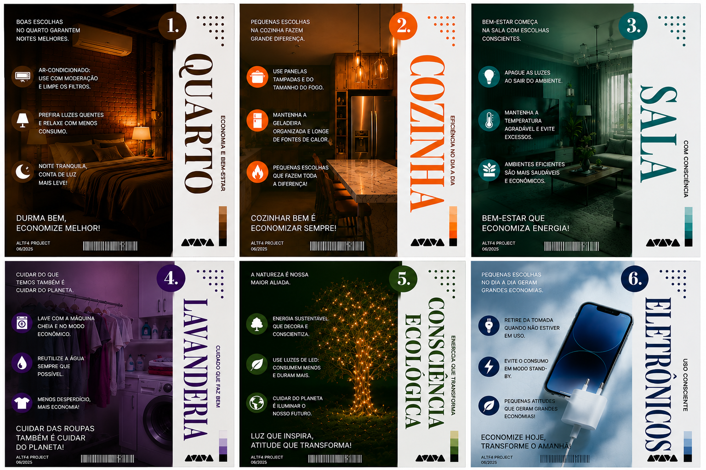

Imagem Desenvolvida
Durante a disciplina de Ferramentas de Desenho foi criada uma imagem educativa para conscientizar as pessoas sobre a importância de economizar.
A imagem apresenta dicas simples que podem ser aplicadas no dia a dia, como apagar as luzes, desligar aparelhos da tomada e cuidar do meio ambiente.

Essas atitudes ajudam a reduzir os gastos financeiros e contribuem para um consumo mais responsável e sustentável.